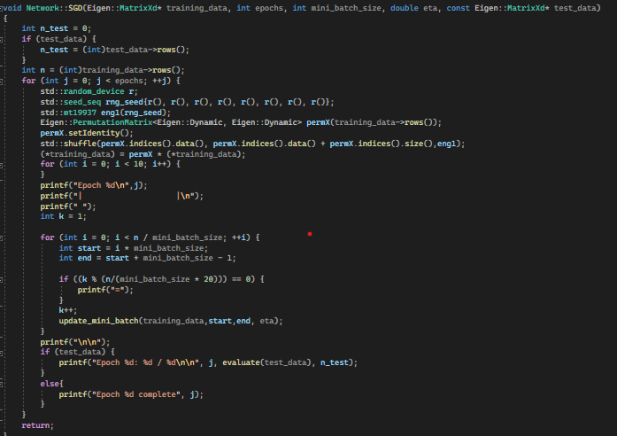
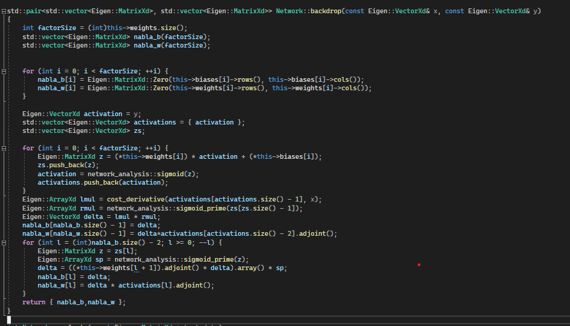

MAchine Learning Digit Recognizer
Full Code
This program implements a Neural Network learning algorithm in order to learn to recognize a series of handwritten digits to 95% accuracy, and with modifications, can be enabled to run with much greater accuracy.
In order to achive this accuracy, I used a combination of stochiastic gradient descent and backtracking. By using the Eigen package the program is able to do this faster than using vectors alone.
The neural net I am using for this project contains three layer. An input layer of 784 node representing a pixel in an 28 by 28 image, a hidden layer of 30 nodes, and an output layer of 10 nodes, each representing a digit. The learing values is set at 3.0, which has been calculate using a trial and error system to determine the most efficient value.
The first step in creating a learning algorithm was to read in the training data. The specifics of where the values were stored and how many iteration were to be used were stored in an inputs filed and is requested upon initial run.

The next step was to then train the algorithm. This can be done in epochs, where each epoch can work of the back of the previous epochs changes to the weights and biases of the neural nets. By shuffling the total input data digit by digit, and then running through a backdrop iteration for a small group of data, the program is able to reach a local minimum error value much faster, as the approximation for some small group of data are close to the change needed for the full set. Hence the program made use of "mini batches".
 As the code repeated over 30 epochs, it can be seen that it reached a maximum efficienct of around 95%, which with some slight modification can imporve immensily. This demonstrates the power of neuran nets, and machine learning.


After the final epoch the data is stored in a csv file that can be imported into projects with less resources in order to recognize digits in that program